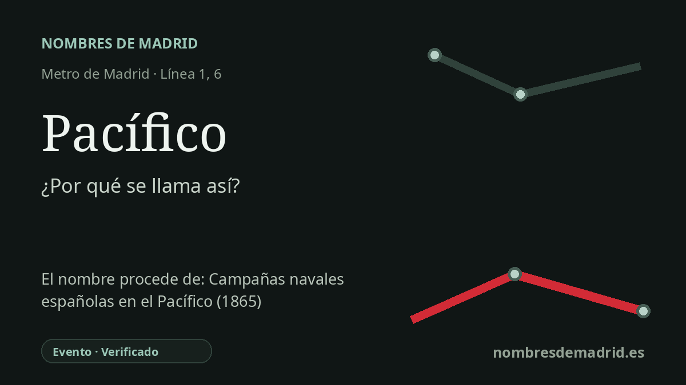

Publicado el · Investigación de Nombres de Madrid · Cómo verificamos cada origen · 7 fuentes consultadas
Respuesta rápida
Pacífico debe su nombre a la antigua calle del Pacífico, denominación anterior de la actual avenida de la Ciudad de Barcelona. Aquella calle recordaba las acciones navales españolas en el Pacífico durante el conflicto de 1865-1866 con Chile y Perú.
La historia del nombre
La estación de Pacífico recibe su nombre de la antigua calle del Pacífico, la vía bajo la que se construyó la línea 1 en esta zona de Madrid. Esa calle es hoy la avenida de la Ciudad de Barcelona, pero la estación, el barrio y varias instituciones del entorno conservaron el nombre antiguo.
El topónimo no aludía simplemente a algo “pacífico” o tranquilo. La ficha histórica de Metro de Madrid sobre Pacífico indica que el antiguo camino de Vallecas pasó a denominarse calle del Pacífico, igual que otras vías cercanas recibieron nombres relacionados con acciones de la Armada Española en la guerra contra Chile y Perú de 1865. La misma fuente cita nombres del entorno como Marina Española y Abtao, lo que muestra que el barrio formó un pequeño conjunto de memoria naval decimonónica.
El conflicto que está detrás del nombre suele conocerse como Guerra de las Islas Chincha, Guerra hispano-sudamericana o, en algunas fuentes españolas, campaña del Pacífico. Entre sus episodios finales más conocidos están el bombardeo de Valparaíso del 31 de marzo de 1866 y el combate del Callao del 2 de mayo de 1866. Fueron hechos celebrados en parte de la memoria conmemorativa española, aunque en Chile y Perú se recuerdan desde perspectivas muy distintas.
La estación de Metro se inauguró el 8 de mayo de 1923 dentro de la prolongación de la línea 1 entre Atocha y Puente de Vallecas. Pacífico se convirtió después en estación de enlace cuando se abrió el primer tramo de la línea 6, Cuatro Caminos-Pacífico, en octubre de 1979. Además, conserva una relación muy visible con los primeros años del Metro: el vestíbulo original de 1923, obra de Antonio Palacios, fue clausurado en 1966 y más tarde restaurado como espacio museístico.
La calle cambió de nombre después de la Guerra Civil Española y pasó a llamarse avenida Ciudad de Barcelona, pero la estación no adoptó esa nueva denominación. Por eso Pacífico conserva una capa antigua del callejero madrileño: un nombre de transporte que remite a la vieja vía, al crecimiento industrial del borde Atocha-Vallecas y a un episodio imperial controvertido en el océano Pacífico.